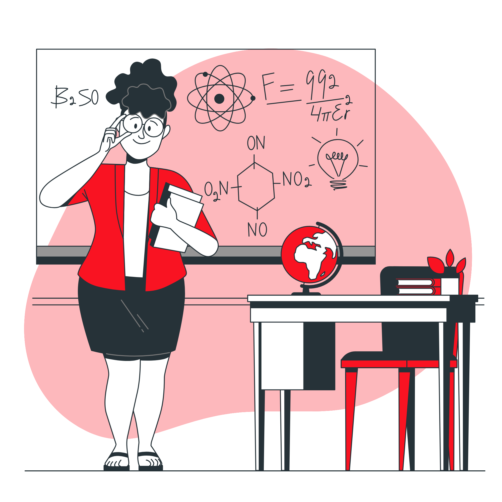

- Escola
- Estudante
A Escola atualmente possui ensino regular fundamental e médio e tem como objetivo ensinar e preparar o aluno.
O professor mais legal é o Prof Marllon, cara bacana, simples e tranquilo. As vezes acontece de acertar um giz na testa de um ou outro, mas faz parte do processo. Atualemente lecionando a disciplina de Física e sofrendo um pouco também com Programação e Robótica!
A turma do 2ºB está contida no itinerário de Matemática e suas Tecnologias, ou seja, devem realizar atividades propostas dessa área. A seguir, poderá verificar algumas das produções realizadas pelos alunos
ola